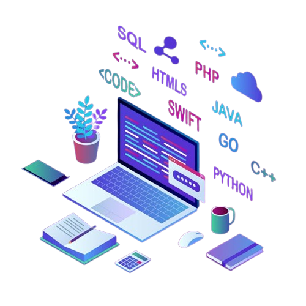

Sou Lucas Marcio, um entusiasta da tecnologia e inovação. Minha jornada no mundo da tecnologia começou no desenvolvimento mobile, onde encontrei minha paixão por criar soluções que fazem a diferença no dia a dia das pessoas. No entanto, logo percebi que meu interesse se estendia além do desenvolvimento de aplicativos. Fui me aprofundando na arquitetura de software, engenharia de sistemas e computação em nuvem, áreas que me permitem pensar de forma mais estratégica e criar soluções escaláveis e sustentáveis.
Ao longo da minha carreira, tenho trabalhado em diversos projetos que me desafiaram e me ajudaram a crescer tanto técnica quanto profissionalmente. Cada novo projeto é uma oportunidade de aprender, experimentar novas tecnologias e resolver problemas complexos com soluções criativas e eficientes. Para mim, cada linha de código é uma chance de construir algo que tenha um impacto real e positivo no mundo.
No meu dia a dia, sou movido por desafios e determinação. Quando me dedico a um projeto, é com 100% de foco e comprometimento, sempre buscando a excelência e a entrega de resultados de alta qualidade.
Estou sempre à procura de novas formas de aprimorar meus conhecimentos e habilidades, seja por meio de cursos, projetos pessoais ou colaborações com outros profissionais. Aprender nunca é suficiente para mim, sempre busco me atualizar com as últimas tendências e inovações da área de desenvolvimento e engenharia.
Além da minha paixão por tecnologia, sou fã de Friends e Tapas & Beijos, duas das minhas séries favoritas. Gosto de maratonar episódios e relaxar no meu tempo livre, seja assistindo a uma boa série, jogando GTA ou Fortnite, ou apenas curtindo o tempo com minha família.
Sou casado e pai de pets, que são meus grandes companheiros tanto no trabalho quanto nos momentos de descanso. Eles me ensinam a importância de equilibrar vida profissional e pessoal, mantendo a energia e a criatividade sempre em alta.
Tenho uma forte crença de que a colaboração é o segredo para o sucesso. Trabalhar em equipe, compartilhar ideias e aprender com outras pessoas me permite não apenas expandir minha visão técnica, mas também aperfeiçoar minhas habilidades de comunicação e liderança. Como desenvolvedor, sei que um bom trabalho de equipe é essencial para alcançar resultados excepcionais.
Acredito profundamente no poder da tecnologia para transformar vidas e negócios, e estou sempre aberto a novas oportunidades de colaboração e desafios que me permitam crescer ainda mais. Tenho uma mentalidade orientada a resultados, e estou sempre disposto a ir além do esperado para entregar soluções de alta qualidade.
Se você tem um projeto bacana ou está buscando alguém para agregar valor à sua equipe, adoraria conversar e explorar como podemos trabalhar juntos para alcançar resultados incríveis!
